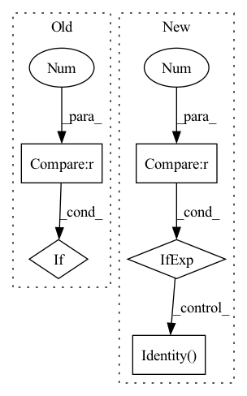

Pattern ID :1497

Before Change
self.conv2
)
self.bypass = nn.Sequential()
if stride != 1:
self.bypass = nn.Upsample(scale_factor=2)
def forward(self, x_in, noise_embed):
batch = x_in.shape[0]
After Change
nn.Conv2d(out_channels, out_channels, 3, 1, padding=1)
)
self.bypass = nn.Sequential(
nn.Upsample(scale_factor=2) if stride > 1 else nn.Identity(),
nn.Conv2d(in_channels, out_channels, 1, 1)
)
In pattern: SUPERPATTERN
Frequency: 4
Non-data size: 5
Instances
Fragment ID: 4194432
Project Name: janspiry/image-super-resolution-via-iterative-refinement
Commit Name: eeae1c09083fea8dbb057a2ca7eb6b0e5e6a7e1b
Time: 2021-08-03
Author: jiangliangwei@tetras.com
File Name: model/modules/unet.py
M Class Name: ResBlockUp
N Class Name: ResBlockUp
M Method Name: __init__(7)
N Method Name: __init__(7)
M Parent Class: nn.Module
N Parent Class: nn.Module
M File Name: model/modules/unet.py
N File Name: model/modules/unet.py
M Start Line: 55
M End Line: 96
N Start Line: 70
N End Line: 88
'>
Before Change
super(CNNUnpairedLayer, self).__init__()
self.context = context
self.mix_base = mix_base
if len(layers)>0 and layers[0]==0:
layers = ()
n = n_in
n += n_in_base*mix_base
After Change
nn.Dropout(p=dropout_rate)
]
n_in = n_out
self.conv = nn.Sequential(*conv) if len(conv) > 0 else nn.Identity()
def forward(self, x): // (B, N, n_in)
B, N, _ = x.shape
'>
Fragment ID: 4194433
Project Name: mxfold/mxfold2
Commit Name: 97079ed64ffd5374169c120e85cd38ec4ed21553
Time: 2019-11-30
Author: satoken@bio.keio.ac.jp
File Name: dnnfold/fold/layers.py
M Class Name: CNNUnpairedLayer
N Class Name: CNNUnpairedLayer
M Method Name: __init__(5)
N Method Name: __init__(8)
M Parent Class: nn.Module
N Parent Class: nn.Module
M File Name: dnnfold/fold/layers.py
N File Name: dnnfold/fold/layers.py
M Start Line: 349
M End Line: 368
N Start Line: 123
N End Line: 132
'>
Before Change
self.conv2
)
self.bypass = nn.Sequential()
if stride != 1:
self.bypass = nn.Upsample(scale_factor=2)
def forward(self, x_in, noise_embed):
batch = x_in.shape[0]
After Change
nn.Conv2d(out_channels, out_channels, 3, 1, padding=1)
)
self.bypass = nn.Sequential(
nn.Upsample(scale_factor=2) if stride > 1 else nn.Identity(),
nn.Conv2d(in_channels, out_channels, 1, 1)
)
'>
Fragment ID: 4194431
Project Name: janspiry/image-super-resolution-via-iterative-refinement
Commit Name: 6424546b8d11bea9ffa4165b94c8c16c56a1de62
Time: 2021-08-03
Author: lw_jiang@foxmail.com
File Name: model/modules/unet.py
M Class Name: ResBlockUp
N Class Name: ResBlockUp
M Method Name: __init__(7)
N Method Name: __init__(7)
M Parent Class: nn.Module
N Parent Class: nn.Module
M File Name: model/modules/unet.py
N File Name: model/modules/unet.py
M Start Line: 55
M End Line: 96
N Start Line: 70
N End Line: 88